The classes of languages that are accepted by finite-state automata on the one hand and pushdown automata on the other hand were shown earlier to be the classes of Type 3 and Type 2 languages, respectively. The following two theorems show that the class of languages accepted by Turing machines is the class of Type 0 languages.
Theorem 4.6.1 Each Type 0 language is a recursively enumerable language.
Proof Consider any Type 0 grammar G = <N, S, P, S>. From G construct a two auxiliary-work-tape Turing machine MG that on a given input x nondeterministically generates some string w in L(G), and then accepts x if and only if x = w.
The Turing machine MG generates the string w by tracing a derivation in G of w from S. MG starts by placing the sentential form S in the first auxiliary work tape. Then MG repeatedly replaces the sentential form stored on the first auxiliary work tape with the one that succeeds it in the derivation. The second auxiliary work tape is used as an intermediate memory, while deriving the successor of each of the sentential forms.
The successor of each sentential form g is obtained by nondeterministically searching g for a substring a, such that a ® b is a production rule in G, and then replacing a by b in g.
MG uses a subcomponent M1 to copy the prefix of g that precedes a onto the second auxiliary work tape.
MG uses a subcomponent M2 to read a from the first auxiliary work tape and replace it by b on the second.
MG uses a subcomponent M3 to copy the suffix of g that succeeds a onto the second auxiliary work tape.
MG uses a subcomponent M4 to copy the sentential form created on the second auxiliary work tape onto the first. In addition, MG uses M4 to determine whether the new sentential form is a string in L(G). If w is in L(G), then the control is passed to a subcomponent M5. Otherwise, the control is passed to M1.
MG uses the subcomponent M5 to determine whether the input string x is equal to the
string w stored on the first auxiliary work tape.
Example 4.6.1 Consider the grammar G which has the following production rules.
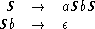
The language L(G) is accepted by the Turing machine MG, whose transition diagram is given in Figure 4.6.1.
|
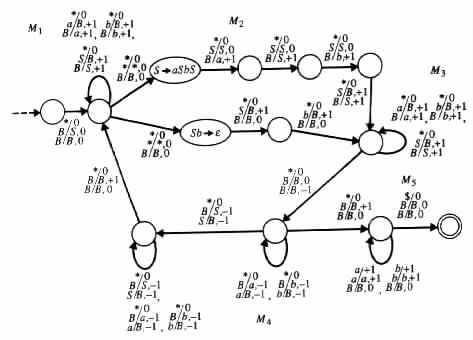
|
The components M1, M2, and M3 scan from left to right the sentential form stored on the first auxiliary work tape. As the components scan the tape they erase its content.
The component M2 of MG uses two different sequences of transition rules for the first and second production rules: S ® aSbS and Sb ® e. The sequence of transition rules that corresponds to S ® aSbS removes S from the first auxiliary work tape and stores aSbS on the second. The sequence of transition rules that corresponds to Sb ® e removes Sb from the first auxiliary work tape and stores nothing on the second.
The component M4 scans from right to left the sentential form in the second auxiliary
work tape, erasing the content of the tape during the scanning. M4 starts scanning the
sentential form in its first state, determining that the sentential form is a string of terminal
symbols if it reaches the blank symbol B while in the first state. In such a case, M4
transfers the control to M5. M4 determines that the sentential form is not a string of
terminal symbols if it reaches a nonterminal symbol. In this case, M4 switches from its
first to its second state.
Theorem 4.6.2 Each recursively enumerable language is a Type 0 language.
Proof The proof consists of constructing from a given Turing machine M a grammar that can simulate the computations of M. The constructed grammar G consists of three groups of production rules.
The purpose of the first group is to determine the following three items.
The purpose of the second group of production rules is to simulate a computation of M. The simulation must start at the configuration determined by the first group. In addition, the simulation must be in accordance with the sequence of transition rules, and within the segments of the auxiliary work tapes determined by the first group.
The purpose of the third group of production rules is to extract the input whenever an accepting computation has been simulated, and to leave nonterminal symbols in the sentential form in the other cases. Consequently, the grammar can generate a given string if and only if the Turing machine M has an accepting computation on the string.
Consider any Turing machine M = <Q, S, G, d, q0, B, F>. With no loss of generality
it can be assumed that M is a two auxiliary-work-tape Turing machine (see Theorem 4.3.1
and Proposition 4.3.1), that no transition rule originates at an accepting state, and that
N = G È { t | t is in d } È { [q] | q is in Q } È {¢, $,  ,
,  ,
,  , #, S, A, C, D, E, F, K} is
a multiset whose symbols are all distinct.
, #, S, A, C, D, E, F, K} is
a multiset whose symbols are all distinct.
From M construct a grammar G = <N, S, P, S> that generates L(M), by tracing in its derivations the configurations that M goes through in its accepting computations. The production rules in P are of the following form.
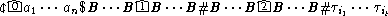
Each such sentential form corresponds to an initial configuration
(¢q0a1 · · · an$, q0, q0) of M, and a sequence of transition rules ti1 · · · tit. The
transition rules define a sequence of compatible states that starts at the initial
state and ends at an accepting state.  represents the input head, 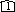 represents
the head of the first auxiliary work tape, and
represents the input head, 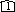 represents
the head of the first auxiliary work tape, and  represents the head of the
second auxiliary work tape. The string B · · · BB · · · B corresponds to a
segment of the first auxiliary work tape, and the string B · · · BB · · · B to a
segment of the second.
represents the head of the
second auxiliary work tape. The string B · · · BB · · · B corresponds to a
segment of the first auxiliary work tape, and the string B · · · BB · · · B to a
segment of the second.
A string in the language is derivable from the sentential form if and only if the following three conditions hold.
 B · · · B corresponds to a segment of the ith auxiliary work
tape that is sufficiently large for the considered computation of M,
1 £ i £ 2. The position of 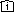 in the segment indicates the initial location
of the corresponding auxiliary work-tape head in the segment.
B · · · B corresponds to a segment of the ith auxiliary work
tape that is sufficiently large for the considered computation of M,
1 £ i £ 2. The position of 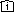 in the segment indicates the initial location
of the corresponding auxiliary work-tape head in the segment.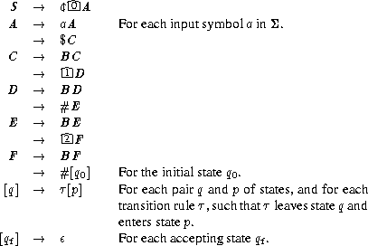
The production rules for the nonterminal symbols S and A can generate a
string of the form ¢ a1 · · · an$C for each possible input a1 · · · an of M. The
production rules for the nonterminal symbols C and D can generate a string of
the form B · · · B
a1 · · · an$C for each possible input a1 · · · an of M. The
production rules for the nonterminal symbols C and D can generate a string of
the form B · · · B B · · · B#E for each possible segment B · · · B
B · · · B#E for each possible segment B · · · B B · · · B
of the first auxiliary work tape that contains the corresponding head location.
The production rules for E and F can generate a string of the form
B · · · B
B · · · B
of the first auxiliary work tape that contains the corresponding head location.
The production rules for E and F can generate a string of the form
B · · · B B · · · B#[q0] for each possible segment B · · · B
B · · · B#[q0] for each possible segment B · · · B B · · · B of the
second tape that contains the corresponding head location. The production
rules for the nonterminal symbols that correspond to the states of M can
generate any sequence ti1 · · · tit of transition rules of M that starts at the
initial state, ends at an accepting state, and is compatible in the transition
between the states.
B · · · B of the
second tape that contains the corresponding head location. The production
rules for the nonterminal symbols that correspond to the states of M can
generate any sequence ti1 · · · tit of transition rules of M that starts at the
initial state, ends at an accepting state, and is compatible in the transition
between the states.
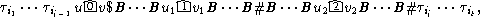
which corresponds to configuration g = (uqv$, u1qv1, u2qv2), a sentential form
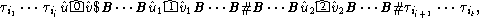
which corresponds to configuration 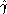 = (û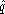 $, û1
$, û1 1, û2
1, û2
 2). g and
2). g and  are
assumed to be two configurations of M such that is reachable from g by a
move that uses the transition rule tij.
are
assumed to be two configurations of M such that is reachable from g by a
move that uses the transition rule tij.
For each transition rule t the set of production rules have
 a, for each symbol a in
S È {¢, $} that satisfies the following condition: t is a transition rule that
scans the symbol a on the input tape without moving the input head.
a, for each symbol a in
S È {¢, $} that satisfies the following condition: t is a transition rule that
scans the symbol a on the input tape without moving the input head.
 ta ® ta
ta ® ta , for each symbol a in
S È {¢, $} that satisfies the following condition: t is a transition rule that
scans the symbol a in the input tape while moving the input head one
position to the right.
, for each symbol a in
S È {¢, $} that satisfies the following condition: t is a transition rule that
scans the symbol a in the input tape while moving the input head one
position to the right.
 Y for each 1 £ i £ 2,
and for each pair of symbols X and Y in G that satisfy the following
condition: t is a transition rule that replaces X with Y in the ith auxiliary
work tape without changing the head position.
Y for each 1 £ i £ 2,
and for each pair of symbols X and Y in G that satisfy the following
condition: t is a transition rule that replaces X with Y in the ith auxiliary
work tape without changing the head position.
 tX ® tY for each 1 £ i £ 2,
and for each pair of symbols X and Y in G that satisfy the following
condition: t is a transition rule that replaces X with Y in the ith auxiliary
work tape while moving the corresponding head one position to the right.
tX ® tY for each 1 £ i £ 2,
and for each pair of symbols X and Y in G that satisfy the following
condition: t is a transition rule that replaces X with Y in the ith auxiliary
work tape while moving the corresponding head one position to the right.
 tY ® tXZ for each 1 £ i £ 2,
and for each triplet of symbols X, Y, and Z in G that satisfy the following
condition: t is a transition rule that replaces the symbol Y with Z in
the ith auxiliary work tape while moving the corresponding head one
position to the left.
tY ® tXZ for each 1 £ i £ 2,
and for each triplet of symbols X, Y, and Z in G that satisfy the following
condition: t is a transition rule that replaces the symbol Y with Z in
the ith auxiliary work tape while moving the corresponding head one
position to the left.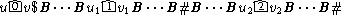
of a configuration of M. t gets across the head symbols  ,
,  , and
by using the production rules in (2) through (7). As t gets across the head
symbols, the production rules in (2) through (7) "simulate" the changes in the
tapes of M, and the corresponding heads position, because of the transition
rule t.
, and
by using the production rules in (2) through (7). As t gets across the head
symbols, the production rules in (2) through (7) "simulate" the changes in the
tapes of M, and the corresponding heads position, because of the transition
rule t.
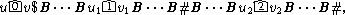
which corresponds to an accepting configuration of M, the input that M accepts. The production rules are as follows.
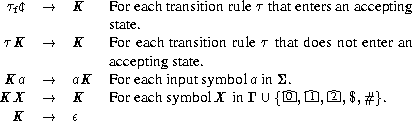

Example 4.6.2 Let M be the Turing machine whose transition diagram is given in Figure 4.5.6(a). L(M) is generated by the grammar G that consists of the following production rules.
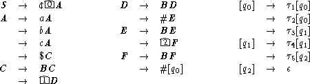
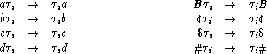
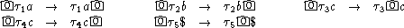
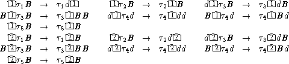
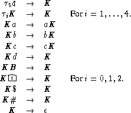
The string abc has a leftmost derivation of the following form in G.

Theorem 4.6.2, together with Theorem 4.5.3, implies the following result.
Corollary 4.6.1 The membership problem is undecidable for Type 0 grammars or, equivalently, for { (G, x) | G is a Type 0 grammar, and x is in L(G) }.
A context-sensitive grammar is a Type 1 grammar in which each production rule has the form g1Ag2 ® g1ag2 for some nonterminal symbol A. Intuitively, a production rule of the form g1Ag2 ® g1ag2 indicates that A ® a can be used only if it is within the left context of g1 and the right context of g2. A language is said to be a context-sensitive language, if it can be generated by a context-sensitive grammar.
A language is context-sensitive if and only if it is a Type 1 language (Exercise 4.6.4), and if and only if it is accepted by a linear bounded automaton (Exercise 4.6.5). By definition and Theorem 3.3.1, each context-free language is also context-sensitive, but the converse is false because the non-context-free language { aibici | i ³ 0 } is context-sensitive. It can also be shown that each context-sensitive language is recursive (Exercise 1.4.4), and that the recursive language LLBA_reject = { x | x = xi and Mi does not have accepting computations on input xi in which at most |xi| locations are visited in each auxiliary work tape } is not context-sensitive (Exercise 4.5.6).
Figure 4.6.2
|
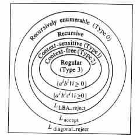
|
![S Þ c|0 A
Þ * c|0 abc$C
Þ * c|0 abc$B 1|BB#E
Þ * c|0 abc$B 1|BB#B 2|BB#[q0]
Þ * c|0 abc$B 1|BB#B 2|BB#t1t2t3t4t5 The sententialforms
Þ * t1ca|0 bc$Bd|1 B#B 2-BB#t2t3t4t5 inthederivation,
Þ * t1t2cab 0|c$Bd|1 B#Bd 2 B#t3t4t5 thatcorrespond to
Þ * t1t2t3cab 0 c$B 1|dB#B|2 dB#t4t5 theconfigurations
Þ * tt t tcabc|0 $ 1-BdB#|2 BdB#t inthesimulated
Þ * 1tt2t34tt cabc 0|$ 1 BdB#|2 BdB# 5 computationof M.
Þ * 1tt2t34tK5abc 0|$ 1|BdB#|2 BdB#
Þ * 1Ka2bc340 $ 1-BdB#|2 BdB#
Þ * abcK |1 BdB# 2 BdB#
Þ * abcK |2 BdB#
Þ * abcK
Þ abc](theory-bk-four82x.gif)